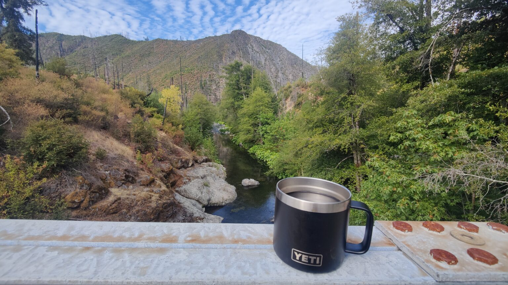

Why Lassen
Lassen Volcanic National Park sits at the southern end of the Cascade Range, in northeastern California, and it gets about a tenth of the visitors of Crater Lake. That's not commentary on the quality of the park — it's a recommendation. Lassen is one of the few places on earth where you can see a plug-dome (Lassen Peak itself), a shield volcano (Prospect Peak), a cinder cone (Cinder Cone — the name is honest), and a composite (Brokeoff, ancient and half-eroded) from a single viewpoint.
Add hydrothermal basins — Bumpass Hell, Sulfur Works, Devil's Kitchen — and a trail system that runs from roadside 10-minute walks to serious summit days, and the park rewards anything from a day drive to a week of backcountry.
Our route
Entering from the south
We came in from the south on CA-89, turning off CA-36 at Mineral. The south entrance puts you on the Lassen Volcanic National Park Highway — a 30-mile scenic drive that climbs up over 8,500 feet at its high point, passes Bumpass Hell, skirts Emerald Lake and Lake Helen, and drops down the north side to Manzanita Lake and the visitor center.
Driving the highway end-to-end takes an hour in summer. Add time for every pullout. Plan a full day if you want to actually see what's outside the windshield.
Emerald Lake
Emerald Lake is a roadside pullout at about 8,000 feet, a short walk below the highway. In mid-spring, it's a bowl of snowmelt-fed glacial water that catches early sun off an ice ledge and turns literally, physically green. By summer it looks more like a clear alpine tarn. Both are worth stopping for. Bring a jacket — the temperature drop from parking to lakeshore is real.

Lake Helen
Half a mile north on the highway from Emerald, Lake Helen sits in a cirque below Lassen Peak. The parking area is bigger, the water is deeper, and the colors are a darker, steadier blue. On a still morning before the wind picks up, it holds a mirror of the peak that's honestly hard to photograph badly.
Bumpass Hell
A 3-mile out-and-back from the Bumpass Hell trailhead (a quarter mile south of Lake Helen) puts you on a boardwalk through the biggest hydrothermal basin in the park. Fumaroles venting sulfur, a full boiling pool, a collection of mud pots that pop audibly. It's the kind of place that looks cartoonish until you realize the warning signs are deadly serious. Stay on the boardwalk.
Sulfur Works
If the Bumpass trail is closed — it often is in shoulder season — Sulfur Works is the consolation prize right off the highway: a steaming vent, a bubbling mud pot, and enough sulfur smell to remind you that Lassen last erupted in 1915, which is recent by geological standards.
Best time to go
- Late June – early October: the highway is fully open, most trails are clear, and the hydrothermal areas are at their best.
- May – mid June: snow lingers at high elevation; Emerald Lake is at its unreal spring color. Some trails are still closed.
- November – April: park highway is closed past the Southwest Entrance. Snowshoe access only beyond that. It is beautiful and you should know what you're doing.
What we packed
- Insulated jacket — above 7,500 ft, temperatures swing 30°F in a day.
- Trekking poles — snow patches on the Bumpass boardwalk slope toward steam vents.
- 2L water per person, minimum, even for the short hikes.
- Headlamps — for the Manzanita Lake star viewing, which is excellent.
- Real hiking boots — Emerald and Helen both have gravel shoulders.
What we skipped (this time)
Lassen Peak itself. The summit trail is a 5-mile, 2,000 ft round trip at altitude, and the last mile gets loose — it deserves a full day and a fresh start, not a tacked-on afternoon. We're saving it for a return trip where we camp at Manzanita and go up at sunrise. Cinder Cone, the actual cinder cone on the park's north edge, is on the same list.
Resources
- National Park Service — Lassen Volcanic National Park
- USGS — Lassen Volcanic Center Volcano Hazards Program
- Calfire / California Road Information — highway and chain controls